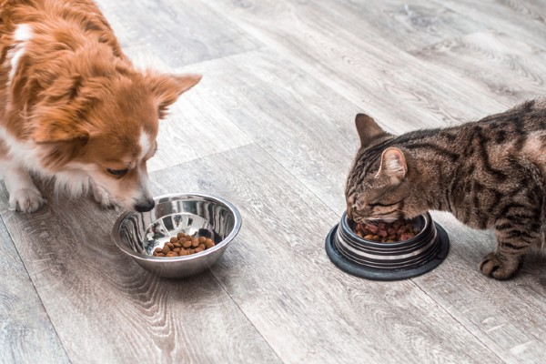
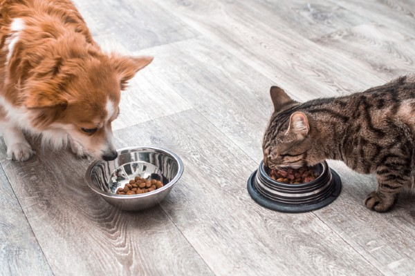
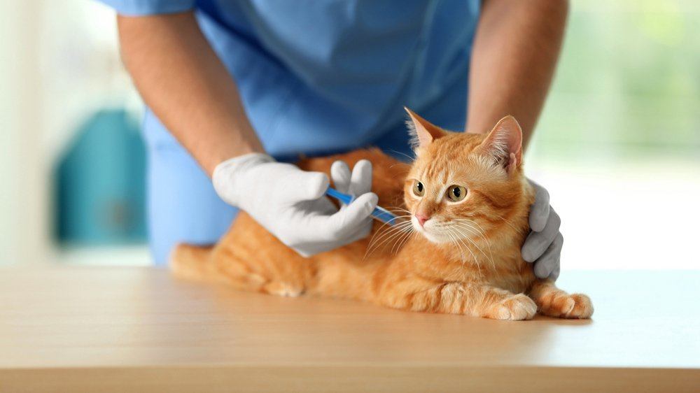
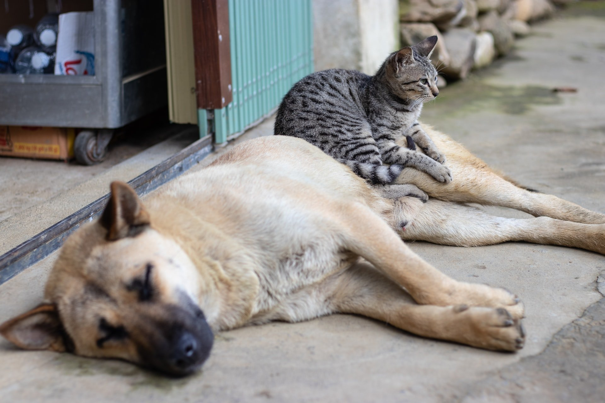
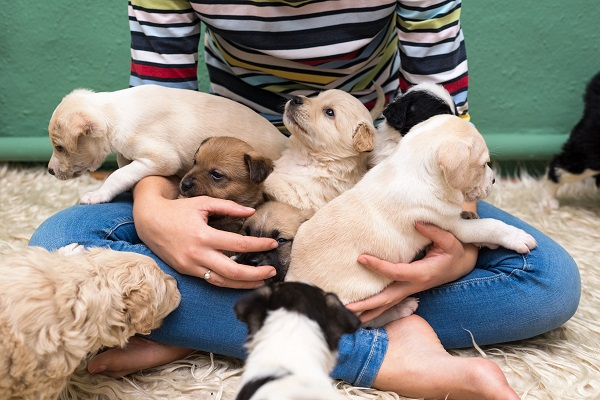

Cuidados Essenciais
1) Alimentação
- Ração adequada para idade e porte.
- Água fresca disponível o dia todo.
- Evite dar alimentos temperados ou chocolate.
 

2) Saúde
- Vacinação e vermifugação em dia.
- Visitas periódicas ao veterinário.
- Controle de pulgas e carrapatos.


3) Higiene e Ambiente
- Banhos conforme orientação do veterinário.
- Escovação para reduzir nós e pelos soltos.
- Ambiente seguro, limpo e enriquecido (brinquedos, arranhadores, passeios).

4) Adaptação e Bem-estar
- Período de adaptação com paciência e rotinas previsíveis.
- Socialização gradual com pessoas e outros animais.
- Carinho, atenção e estímulos diários.

